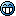

Doogle
Mychaeel: Welcome to the Wiki, Doogle.  Please add yourself to the Project Contributors list.
Please add yourself to the Project Contributors list.
Tarquin: Hi & welcome.

Yay! I got a lil bitty here, dunno what to stick in so I'll copy the kind of stuff other people have done like puttin bits about me n stuff in
Mapping stuff
Well I've been into mapping for Unreal and Unreal Tournament for about 2 years now, I did a little bit of map making for Thief the Dark Project before that but only got one finished and never released it to the net cos it was just something for myself to play with. So far I've not actually made any finished maps for the Unreal games either, tending to spend most of my time trying things out instead of making a proper map.
For the past few months now I've been working on a conversion of the UT1 map CTF-Hydro16 for UT2k3, simply because that's my favourite CTF map for UT1, plus it was a good way to learn some new techniques with the new engine and editor. I've almost finished working on the red base side of it, about to start tweaking the blue base to update the imagery
Personal info type stuff
Well this is where I tell you about what I am. Basically I'm a 25 year old bloke from Sherwood Forest (Thats Robin Hood's home to those who don't know  )
)
I have a full time job travelling the area from Chesterfield to Scarborough fixing tills and computers, employed by IBM of all companies cos I got lucky
My hobbies, not including mapping for UT etc are playing pool (I'm on a local pub team) Going mountain biking (trials, downhill, street, XC, etc.) and fiddlin on my computer, plus I also build and repair computers for friends and neighbours in the area
A couple links
Here's a couple of links to places I like n go to
http://www.doogle.co.uk – My personal website, not that I like to plug it at every opportunity 
http://www.isketch.net – A cool web based Pictionary game, draw the object n guess to win